Công cụ này chủ yếu hoàn thành việc tính toán khoảng cách hai điểm, khoảng cách điểm đến đường thẳng, khoảng cách điểm đến mặt phẳng, khoảng cách đường thẳng đến đường thẳng hoặc khoảng cách đường thẳng đến mặt phẳng.
1. Vấn đề tính khoảng cách giữa hai điểm ba chiều; 2. Vấn đề tính khoảng cách từ điểm đến đường thẳng; 3. Vấn đề tính khoảng cách từ điểm đến mặt phẳng; 4. Vấn đề tính khoảng cách giữa hai đường thẳng; 5. Vấn đề tính khoảng cách giữa đường thẳng và mặt phẳng; 6. Sử dụng hệ số bù và bù cố định để bù sai số hệ thống hình ảnh, nhằm căn chỉnh dữ liệu chiếu hai chiều; 7. Giá trị khoảng cách đo được cần phán đoán giới hạn trên dưới và đầu ra kết quả phán đoán;
Bước 1：Thêm file đám mây điểm, công cụ tạo phần tử, công cụ đo khoảng cách đám mây điểm, và double click mở chuỗi tham số công cụ, liên kết file đám mây điểm, như hình 3-1 cho thấy;
Bước 2：Nhấp chuột phải vào công cụ tạo phần tử, chọn “Thuộc tính” mở giao diện nâng cao công cụ, như hình 3-2 cho thấy, lần lượt tạo hai điểm ba chiều;
Bước 3：Công cụ đo khoảng cách đám mây điểm liên kết chuỗi dữ liệu, nhấp chuột phải mở giao diện thuộc tính nâng cao công cụ, thiết lập hệ số bù là ‘1’, bù cố định là ‘0’, sau đó click chạy để thu được khoảng cách giữa hai điểm ba chiều này, như hình 3-3 cho thấy;
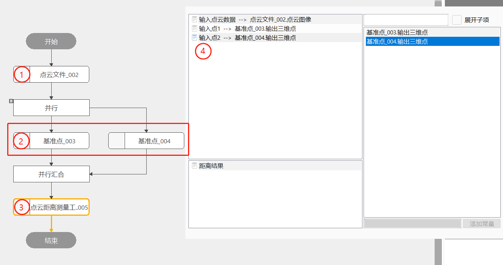
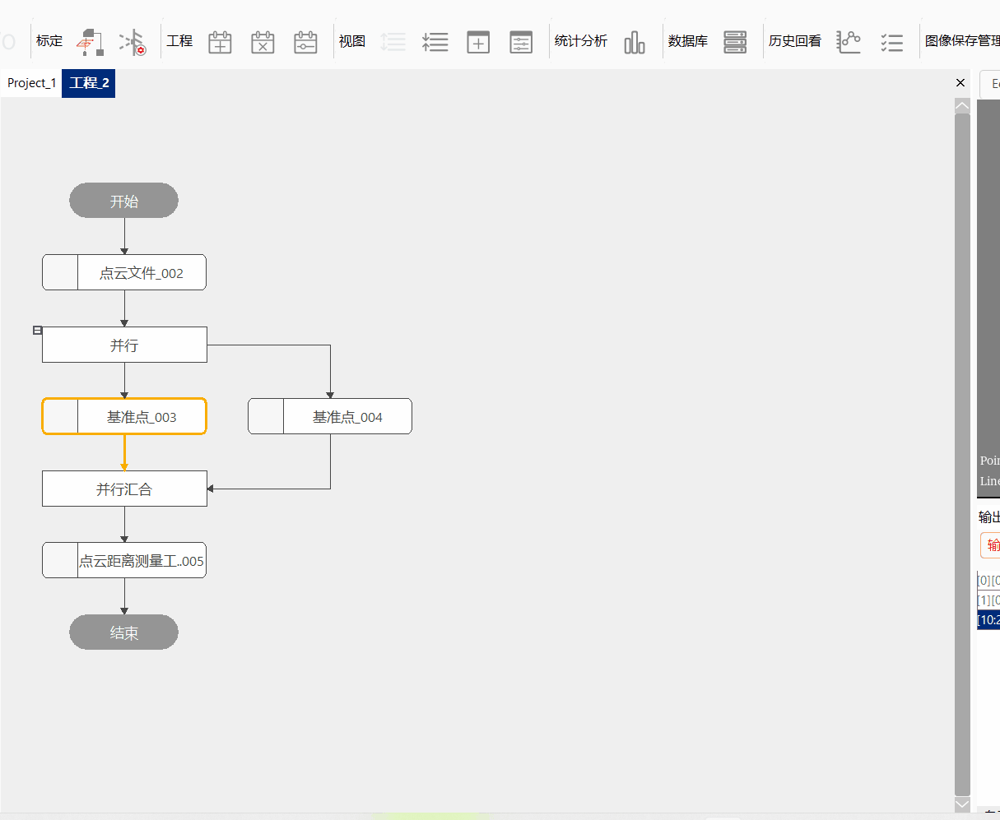
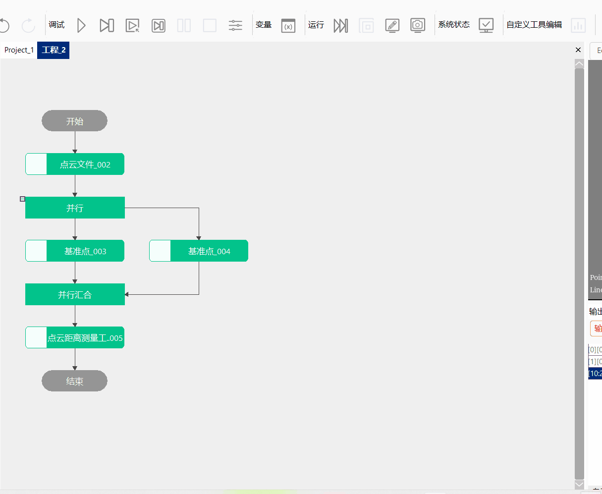
Bước 1：Thêm file đám mây điểm, công cụ tạo phần tử, công cụ đo khoảng cách đám mây điểm, và double click mở chuỗi tham số công cụ, liên kết file đám mây điểm, như hình 3-4 cho thấy;
Bước 2：Nhấp chuột phải vào công cụ tạo phần tử, chọn “Thuộc tính” mở giao diện nâng cao công cụ, như hình 3-5 cho thấy, lần lượt tạo một điểm ba chiều và một đường thẳng ba chiều;
Bước 3：Công cụ đo khoảng cách đám mây điểm liên kết chuỗi dữ liệu, nhấp chuột phải mở giao diện thuộc tính nâng cao công cụ, thiết lập hệ số bù là ‘1’, bù cố định là ‘0’, sau đó click chạy để thu được khoảng cách giữa điểm ba chiều và đường thẳng ba chiều, như hình 3-6 cho thấy;
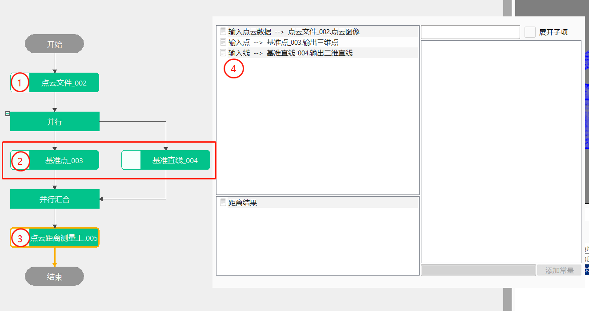
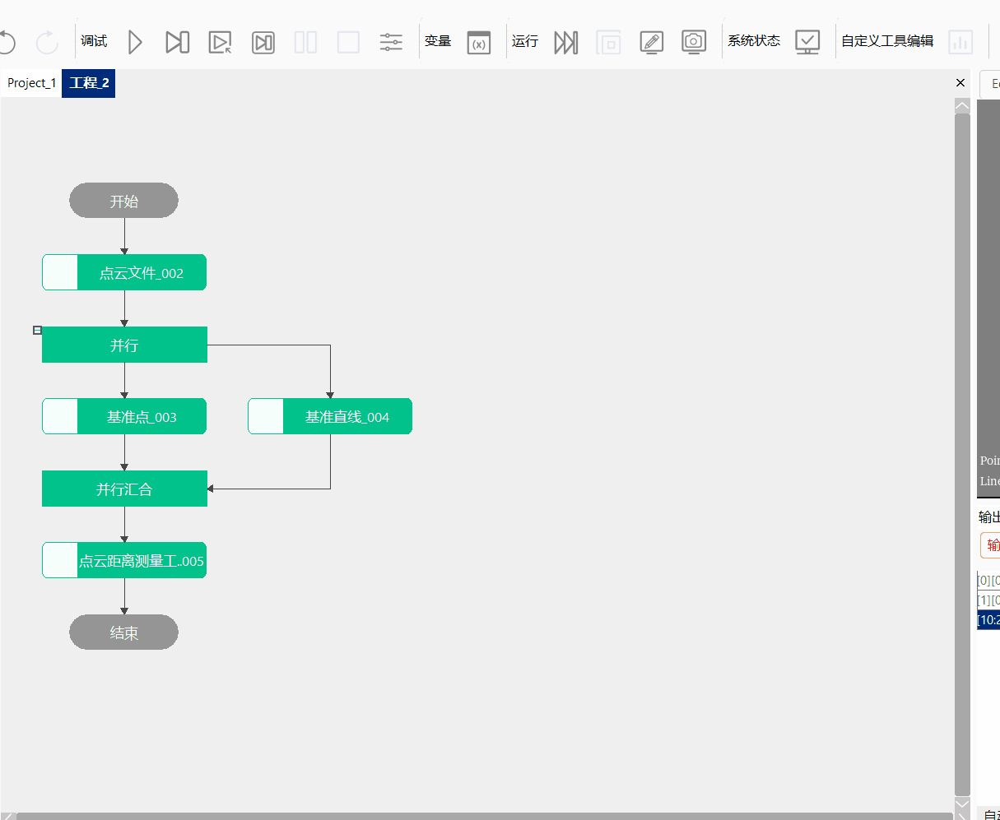
Bước 1：Thêm file đám mây điểm, công cụ tạo phần tử, công cụ đo khoảng cách đám mây điểm, và double click mở chuỗi tham số công cụ, liên kết file đám mây điểm, như hình 3-7 cho thấy;
Bước 2：Nhấp chuột phải vào công cụ tạo phần tử, chọn “Thuộc tính” mở giao diện nâng cao công cụ, như hình 3-8 cho thấy, lần lượt tạo một điểm ba chiều và một mặt phẳng ba chiều;
Bước 3：Công cụ đo khoảng cách đám mây điểm liên kết chuỗi dữ liệu, nhấp chuột phải mở giao diện thuộc tính nâng cao công cụ, thiết lập hệ số bù là ‘1’, bù cố định là ‘0’, sau đó click chạy để thu được khoảng cách giữa điểm ba chiều và mặt phẳng ba chiều, như hình 3-9 cho thấy;
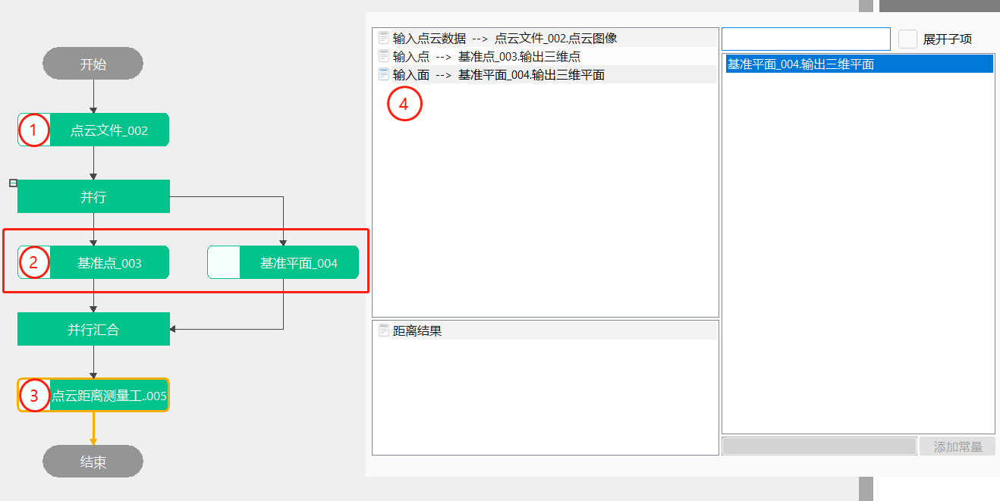
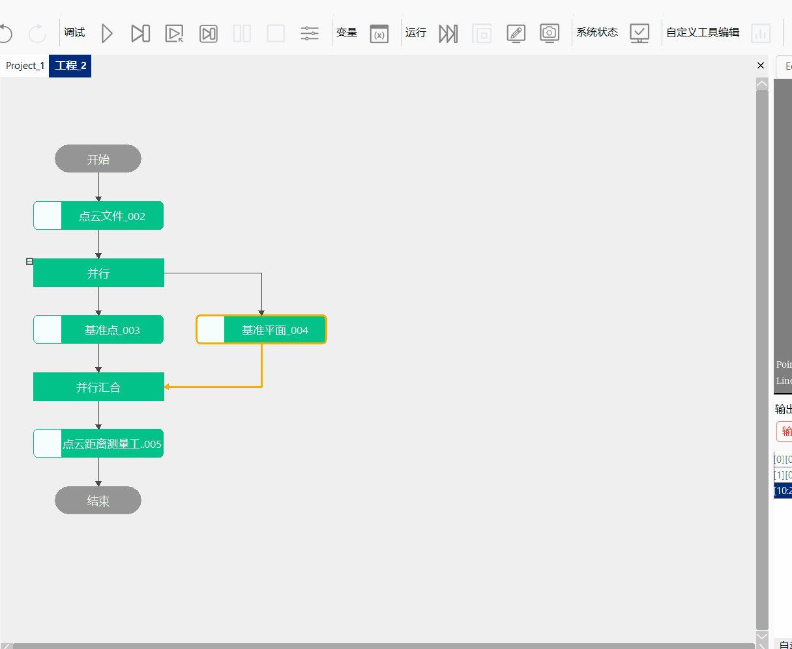
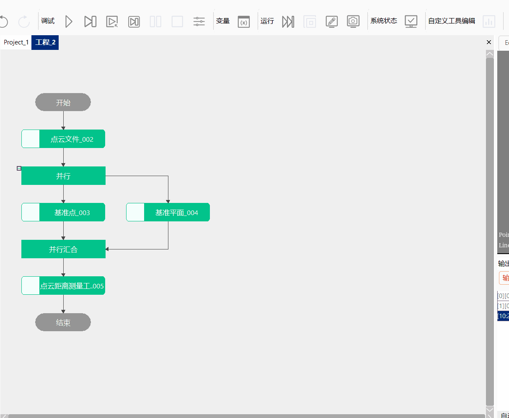
Bước 1：Thêm file đám mây điểm, công cụ tạo phần tử, công cụ đo khoảng cách đám mây điểm, và double click mở chuỗi tham số công cụ, liên kết file đám mây điểm, như hình 3-10 cho thấy;
Bước 2：Nhấp chuột phải vào công cụ tạo phần tử, chọn “Thuộc tính” mở giao diện nâng cao công cụ, như hình 3-11 cho thấy, lần lượt tạo hai đường thẳng ba chiều;
Bước 3：Công cụ đo khoảng cách đám mây điểm liên kết chuỗi dữ liệu, nhấp chuột phải mở giao diện thuộc tính nâng cao công cụ, thiết lập hệ số bù là ‘1’, bù cố định là ‘0’, sau đó click chạy để thu được khoảng cách giữa hai đường thẳng ba chiều này, như hình 3-12 cho thấy;
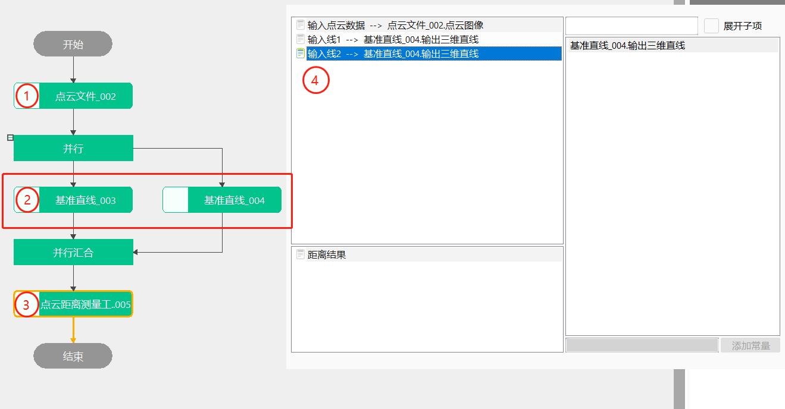
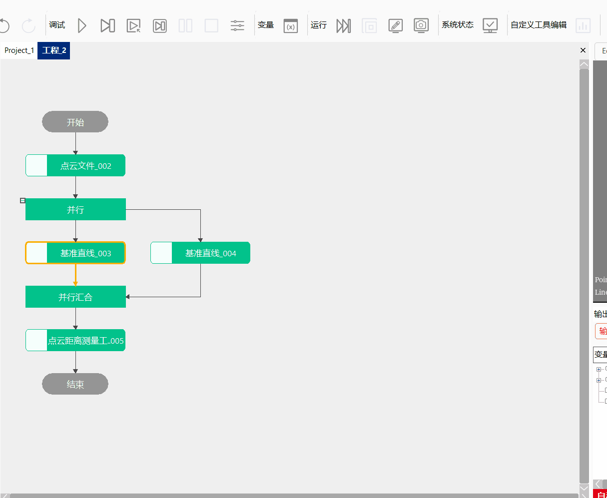
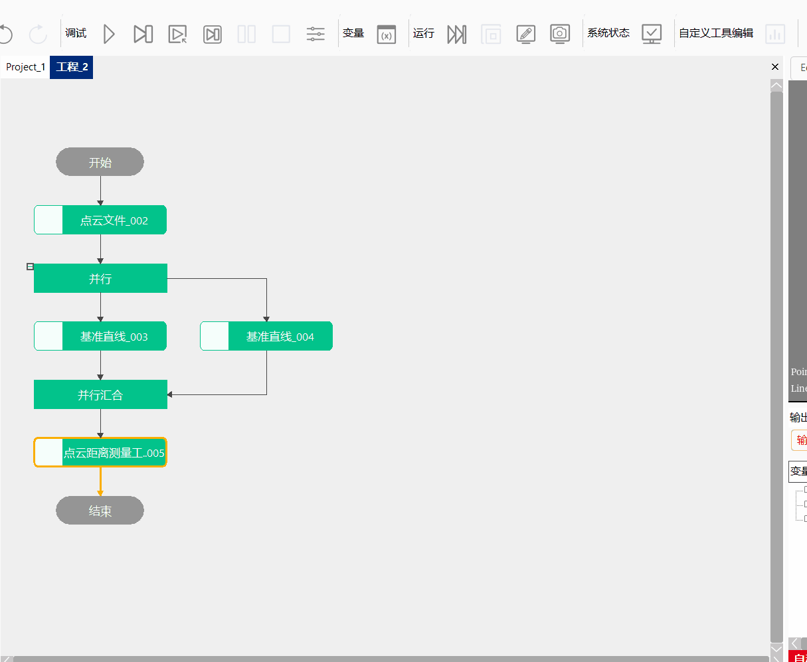
Bước 1：Thêm file đám mây điểm, công cụ tạo phần tử, công cụ đo khoảng cách đám mây điểm, và double click mở chuỗi tham số công cụ, liên kết file đám mây điểm, như hình 3-13 cho thấy;
Bước 2：Nhấp chuột phải vào công cụ tạo phần tử, chọn “Thuộc tính” mở giao diện nâng cao công cụ, như hình 3-14 cho thấy, lần lượt tạo một đường thẳng ba chiều và một mặt phẳng ba chiều;
Bước 3：Công cụ đo khoảng cách đám mây điểm liên kết chuỗi dữ liệu, nhấp chuột phải mở giao diện thuộc tính nâng cao công cụ, thiết lập hệ số bù là ‘1’, bù cố định là ‘0’, sau đó click chạy để thu được khoảng cách giữa đường thẳng ba chiều và mặt phẳng ba chiều, như hình 3-15 cho thấy;
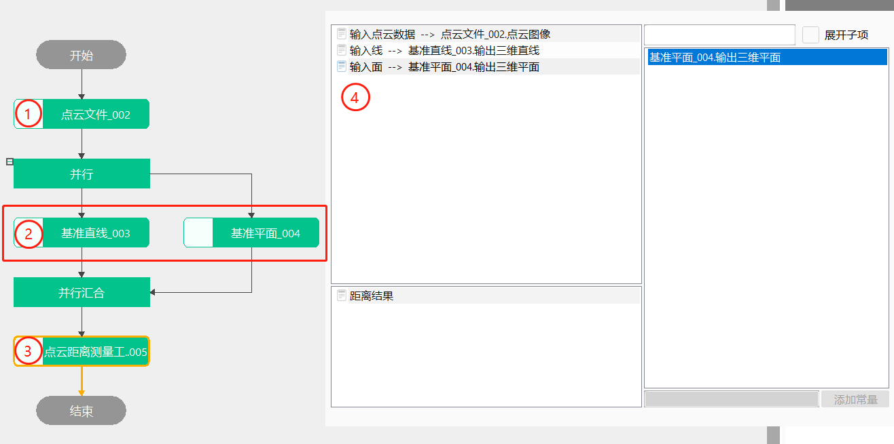
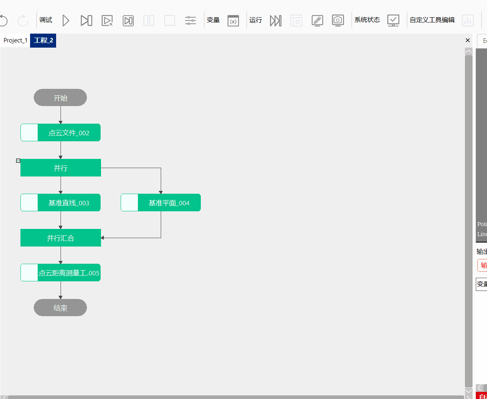
| Tên tham số | Giải thích tham số |
|---|---|
| Dữ liệu đám mây điểm đầu vào | Liên kết hình ảnh đám mây điểm bên ngoài |
| Điểm 1 đầu vào | Liên kết điểm bên ngoài |
| Điểm 2 đầu vào | Liên kết điểm bên ngoài |
| Tên tham số | Giải thích tham số |
|---|---|
| Loại đo khoảng cách | Bao gồm: khoảng cách hai điểm, khoảng cách điểm đến đường thẳng, khoảng cách điểm đến mặt phẳng, khoảng cách hai đường thẳng, khoảng cách đường thẳng đến mặt phẳng |
| Hệ số bù | Hệ số bù kết quả đo. Phạm vi [-1000000,1000000]; thông thường là 1, dùng để bù sai số hệ thống hình ảnh |
| Bù cố định | Bù cố định kết quả đo. Phạm vi [-1000000,1000000]; thông thường là 0, dùng để bù sai số hệ thống hình ảnh |
| Giới hạn dưới giá trị khoảng cách | Phạm vi giá trị [-1000000,1000000], và giới hạn dưới phải nhỏ hơn hoặc bằng giới hạn trên |
| Giới hạn trên giá trị khoảng cách | Phạm vi giá trị [-1000000,1000000], và giới hạn dưới phải nhỏ hơn hoặc bằng giới hạn trên |
Tham số giao diện nâng cao giống với tham số cửa sổ thuộc tính.
| Tên tham số | Giải thích tham số |
|---|---|
| Kết quả khoảng cách | Kết quả đo khoảng cách |
| Tên tham số | Giải thích tham số |
|---|---|
| Kết quả khoảng cách | Kết quả đo khoảng cách |
| Thời gian thực thi | Thời gian thực thi công cụ |
| Kết quả thực thi | Kết quả thực thi công cụ |
Xem “\Samples\3D\đám mây điểm\đo đám mây điểm.gvp”.
Khoảng cách hai điểm：Đầu vào dữ liệu đám mây điểm, thu được hai điểm ba chiều, tính khoảng cách giữa hai điểm ba chiều;
Khoảng cách điểm đến đường thẳng：Đầu vào dữ liệu đám mây điểm, thu được một điểm ba chiều và một đường thẳng ba chiều, tính khoảng cách giữa điểm ba chiều và đường thẳng ba chiều;
Khoảng cách điểm đến mặt phẳng：Đầu vào dữ liệu đám mây điểm, thu được một điểm ba chiều và một mặt phẳng ba chiều, tính khoảng cách giữa điểm ba chiều và mặt phẳng ba chiều;
Khoảng cách hai đường thẳng：Đầu vào dữ liệu đám mây điểm, thu được hai đường thẳng ba chiều, tính khoảng cách giữa hai đường thẳng ba chiều;
Khoảng cách đường thẳng đến mặt phẳng：Đầu vào dữ liệu đám mây điểm, thu được một đường thẳng ba chiều và một mặt phẳng ba chiều, tính khoảng cách giữa đường thẳng ba chiều và mặt phẳng ba chiều;